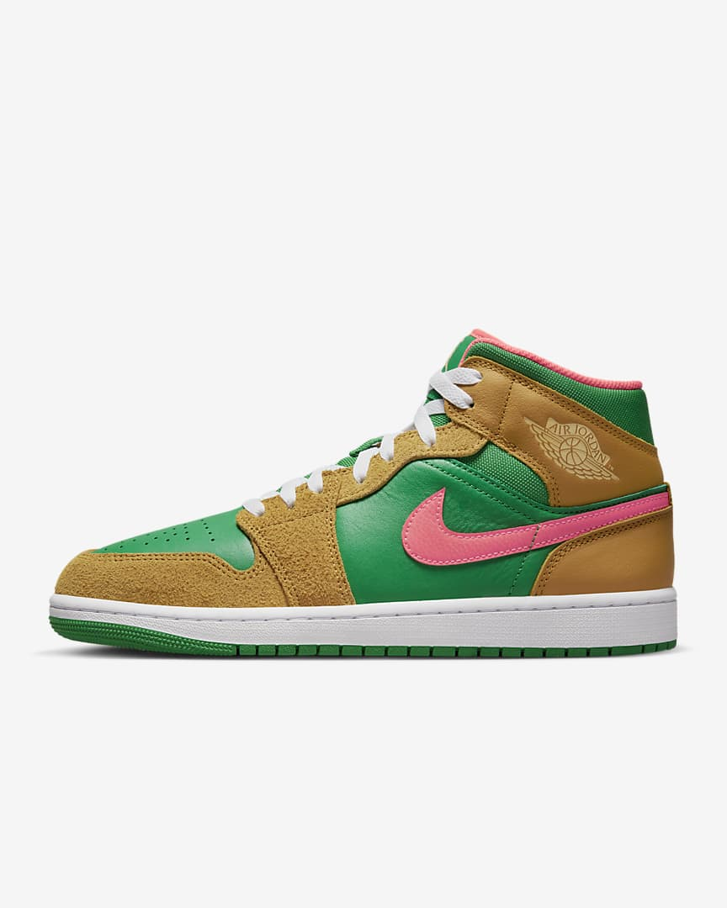

Thêm sản phẩm
| ID | SKU | NAME | DESCRIPTION | PRICE | STOCK | PRODUCTTYPE | IMAGE | STATUS | ACTIONS |
|---|---|---|---|---|---|---|---|---|---|
| 1 | N1 | AIR FORCE 1 | Nike Air Force 1 Ra mắt vào năm 1982 bởi nhà thiết kế Bruce Kilgore, ngay lập tức mẫu giày Nike Air Force 1 (AF1) đã trở thành một ‘hit’ mạnh trên khắp thế giới khi ‘sold out’ ngay trong ngày đầu trình làng. Thiết kế mẫu giày Nike Air Force 1 được xem là đôi giày mang tính cách mạng trong thế giới sneaker, khi mà các nhà thiết kế kết hợp với các nhà khoa học cho ra mẫu giày có công nghệ ‘Air’ – một túi khí ở gót chân để đệm hỗ trợ. | 3,300,000 đ | 10 | Nike | Còn hàng |
Sửa sản phẩm
|
|
| 2 | A1 | GIÀY NMD_R1 PRIMEBLUE | GIÀY NMD_R1 PRIMEBLUE Ra mắt vào năm 1982 bởi nhà thiết kế Bruce Kilgore, ngay lập tức mẫu giày Nike Air Force 1 (AF1) đã trở thành một ‘hit’ mạnh trên khắp thế giới khi ‘sold out’ ngay trong ngày đầu trình làng. Thiết kế mẫu giày Nike Air Force 1 được xem là đôi giày mang tính cách mạng trong thế giới sneaker, khi mà các nhà thiết kế kết hợp với các nhà khoa học cho ra mẫu giày có công nghệ ‘Air’ – một túi khí ở gót chân để đệm hỗ trợ. | 3.900.000₫ | 10 | Adidas |  |
Còn hàng |
Sửa sản phẩm
|
| 3 | J1 | Air Jordan 1 Mid SE | Air Jordan 1 Mid SE Ra mắt vào năm 1982 bởi nhà thiết kế Bruce Kilgore, ngay lập tức mẫu giày Nike Air Force 1 (AF1) đã trở thành một ‘hit’ mạnh trên khắp thế giới khi ‘sold out’ ngay trong ngày đầu trình làng. Thiết kế mẫu giày Nike Air Force 1 được xem là đôi giày mang tính cách mạng trong thế giới sneaker, khi mà các nhà thiết kế kết hợp với các nhà khoa học cho ra mẫu giày có công nghệ ‘Air’ – một túi khí ở gót chân để đệm hỗ trợ. | 3,959,000₫ | 10 | Jordan |  | Còn hàng |
Sửa sản phẩm
|